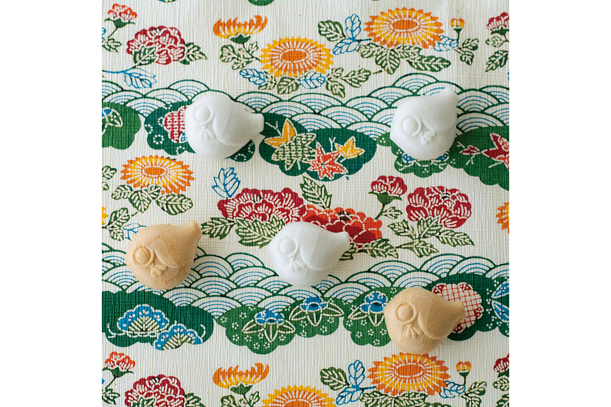
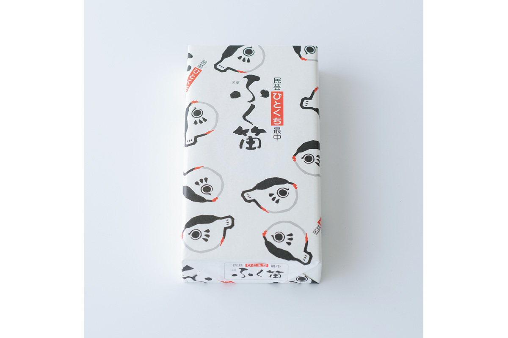
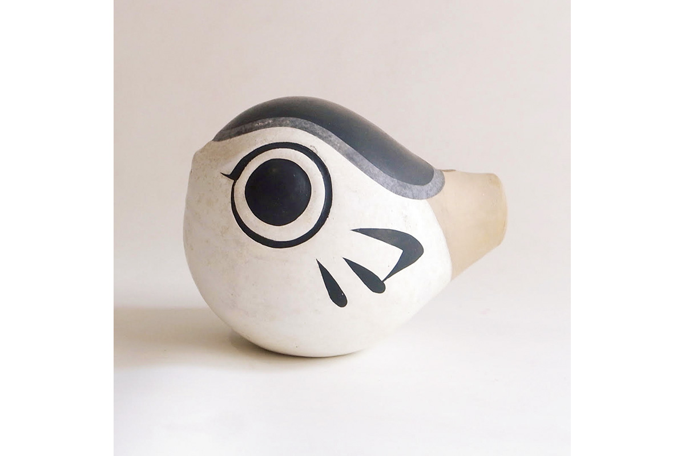

Префектура Ямагути · Симоносэки · сладости
«Фукубуэ монака»: сладость в виде фугу-свистульки из Симоносэки

В Симоносэки есть игрушка, которая приносит удачу: глиняная свистулька в форме рыбы фугу. Местная кондитерская лавка превратила её в маленькую сладость, которую удобно везти в подарок.
Игрушка
Свистулька, которая зовёт удачу
В японском народном ремесле, мингэй, есть отдельный жанр: народная игрушка. Её собирали и изучали так же серьёзно, как посуду или ткани. Первый директор Музея народного ремесла в Курасики был страстным коллекционером игрушек, а его известная книга «Музей народного ремесла для юных», впервые изданная в 1984 году, показывает игрушки со всего мира. Движение мингэй при этом не только собирало старое, но и придумывало новые вещи в народном духе.

Одна из таких новых вещей родилась в Симоносэки, портовом городе на западной оконечности Хонсю, который славится рыбой фугу. В 1935 году местные любители игрушки основали «Общество любителей народной игрушки Симоносэки» и начали выпускать свой журнал о народном ремесле под названием «Фукубуэ». Из этого кружка и вышла свистулька «фукубуэ» в форме фугу, главной рыбы города.
Название построено на игре слов. В префектурах Ямагути и Фукуока, где фугу вылавливают, рыбу на удачу называют не «фугу», а «фуку»: это слово звучит так же, как «счастье». А поскольку перед нами свистулька, в имени, похоже, спрятан и глагол «фуку», то есть «дуть». Получается то ли «счастливая свистулька», то ли «свистулька, в которую дуют», и оба смысла ей подходят.

Сладость
Монака с раздутым брюшком
Лавку «Эдокин» в Симоносэки основали в 1862 году. Больше всего она известна рисовыми крекерами «камэ-но ко сэмбэй», похожими на черепаховый панцирь. Здесь же делают и «Фукубуэ монака»: сладость повторяет форму той самой свистульки.
Монака это две хрустящие вафельные створки из рисового теста с начинкой из бобовой пасты. В «Эдокин» их делают на один укус, круглыми и очень милыми. Раздутое, как у настоящей фугу, брюшко плотно набито пастой из красной фасоли адзуки с целыми бобами. Сладость, которая зовёт удачу, хорошо подходит в подарок тем, кто ждёт вас дома.
«Эдокин»
- Адрес
- префектура Ямагути, Симоносэки, Оросисинмати, 7-3
- Телефон
- +81 83-223-0391
- Часы работы
- 8:30–17:15
- Выходные
- воскресенье, 1 января
- Цены / Вход
- «Фукубуэ монака», 12 штук, 810 иен
Фото: Вакана Баба; фото игрушек: Swimsuit Department.